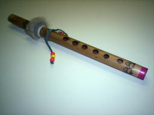
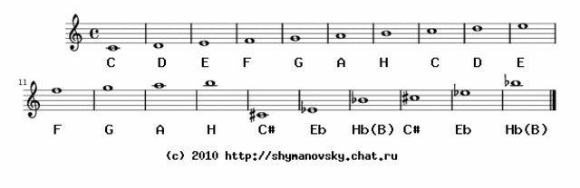
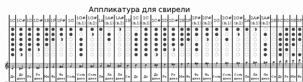
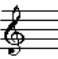
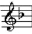
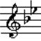

Как научиться играть на свирели
1.Введение.
Свирель - один из древнейших музыкальных инструментов,
оставшийся при этом неизменным до сих пор. Имеет множество
разных названий в различных странах и массу аналогов, отличающихся
мелкими деталями - например, вистл или традиционная сопилка. Является
национальным народным инструментом в десятках государств. Очень
распространен в странах причерноморья и средиземноморья от Украины до
Португалии.
Тысячелетиями свирель являлась неизменным атрибутом пастухов.
У свирели очень характерный хрипловатый нежный звук, поэтому
она обычно используется как солирующий инструмент. Для нее в разное
время писались серьезные музыкальные произведения. Очень хорошо
слушается с любым сопровождением от гитары до синтезатора, с симфоническим
оркестром и в составе рок- команды.
При всех этих достоинствах игра на свирели проста. Конечно
нужно иметь немного музыкального слуха. Музыкальное образование не
обязательно, хотя желательно.

2. Техническая сторона дела.
Классическая свирель представляет собой камышовую трубку
длиной около 30 см. со свистковым устройством с одной стороны и с
шестью отверстиями. Сейчас промышленно выпускаются свирели
изготовленные токарным способом из древесины или из пластика.
В доперестроечные времена сопилки продавались в музыкальных магазинах.
Теперь я их давно не вижу. Ее нетрудно изготовить самому.
Про это подробно рассказывается здесь.
3. Пробуем звук.

Основные звуки
 C (до)
C (до)
 D (ре)
D (ре)
 E (ми)
E (ми)
 F (фа)
F (фа)
 G (соль)
G (соль)
 A (ля)
A (ля)
 H (си)
H (си)
Дополнительные звуки
C# или Cis (до диез)
Eb или Ees (ми бемоль)
 Hb или Hes или B (си бемоль)
Hb или Hes или B (си бемоль)
В этой таблице показано, каким образом извлекается тот или
иной звук. Слева изображена свирель. Красная точка над отверстием
говорит о том, что отверстие закрыто. Синий штрих - отверстие
закрыто на половину. Если ни точки ни штриха нет, то отверстие
открыто. Справа приведено название звука по международной системе.
В скобках указано принятое у нас итальянское название.
Держать инструмент нужно располагая пальцы над отверстиями. Причем
4 отверстия, расположенные ближе к лицу зажимаются пальцами левой
руки, а оставшиеся два - пальцами правой руки. Вообще, по официальным
правилам положено зажимать левой рукой три отверстия у лица, а правой -
остальные три. Я считаю, что это неудобно. При попытке взять ноту "Си",
когда все дырки открыты, свирель попросту выпадет из рук. В моем способе
кончик свирели зажимается между безымянным пальцем и мизинцем правой руки.
Таким образом можно играть и "на ходу" и даже стоя на голове.
Диапазон звучания свирели - две с половиной октавы. Если вы
дуете слабо - вы в первой октаве, если сильно то во второй. Если
подуть очень сильно то в третьей. Хотя на практике всегда хватает
полторы октавы.
Полная аппликатура показана в этой таблице. Кликабельно. Примечание:
Нота "Си" в ней обозначена как "B".

4. Играем
Играть будем конечно гаммы. Да, господа, и торг здесь неуместен.
Даже крутые профи играют гаммы каждый день. Новичкам они нужны тем
более. Я вынес эти упражнения на отдельные странички. Этого будет
достаточно. Не старайтесь играть быстро. Гораздо важнее следить за
качеством звука.
Гамма До-мажор
Гамма Фа-мажор
Гамма Ре-минор натуральный
Гамма Ре-минор гармонический
Играть гаммы нужно до тех пор, пока не доведете их до автома-
тизма и не думать во время игры, какие отверстия зажимать.
Благодаря этому у вас разовьется подсознательная связь между звуком
и комбинацией пальцев. Тогда легко можно будет играть мелодии по
памяти, из головы, не задумываясь над тем, как вы это делаете.
Очень просто можно будет импровизировать, то есть сочинять мелодию
прямо во время игры.
Если Вам не терпится сыграть что нибудь помелодичнее, попробуйте
вот это. С тех пор как я повесил у себя на сайте этот самоучитель (c) 1997, я
регулярно получаю вопросы, где скачать ноты для свирели. Это действительно
большая проблема в сети. Поэтому решил иногда делать обработки простых
мелодий и складывать их здесь. Много не обещаю, но что-нибудь еще появится.
Заходите в гости иногда.
Л.Бекман. В лесу родилась елочка.
Э.Морриконе музыка из фильма "Хороший, Плохой и Безобразный"
Г.Гендель. Сарабанда HWV-448
Ю.Морозов. Без названия
Н.Будашкин. Песня из х.ф. "Морозко"
Американская народная. Янки Дудль
Р.Паулс Колыбельная
Н.Рота. музыка из фильма "Ромео и Джульетта"
Г.Гендель. Сарабанда HWV-437
Ю.Шимановский. Деревянные солдаты
Американская народная. Изумительная красота
Французская ародная. Французская песня
Поль Мориа. Quand fera-t'il jour camarade
В. Дашкевич. Соло из к/ф "Собака Баскервиллей"
Русская народная. Марш Преображенского полка
Американская народная. Гимн Республики
Английская народная. Английский марш
Майкл Льюис. Из фильма "Собака Баскервиллей" (Англия, 1983)
П.Чайковский. Старинная французская песенка
Л. Коэн. Алилуйя
Арабская народная. Эй, Мустафа
Г.Кэри. Гимн Англии
А.Александров. Гимн России
Л.Бетховен. Романс
В. Дашкевич. Двадцатый век начинается
Rainbow. Снеговик
Ю. Шимановский. Марш
Ю. Шимановский. Птичка
Ю. Шимановский. Серые крылья
Примечания.
1. Большинство мелодий адаптировано, то есть немного отличаются от авторского
варианта. Они чуть-чуть сокращены, упрощены и перенесены в удобную для
свирели тональность.
2. Меня иногда спрашивают, что значат странные буквы в нотах, например Am, C,
G7. Просто не обращайте на них внимание. Это нужно для аккомпанимента. Если
вы играете с гитарой, с ф-но и т.д. то эти буквы понадобятся другому музыканту.
Он знает, что делать. Вам они не нужны.
Кроме того, можно воспользоваться cборником русских и
украинских народных песен для блокфлейты. Составитель Евгений Шилин. Для
свирели подойдет примерно половина из них. Выберите произведения, где нет
знаков в ключе, либо один бемоль, либо два бемоля. Вообще, при игре по нотам
лучше иметь представление о нотной записи. В двух словах, для совсем уж
чайников, нужно подчеркнуть одно важное правило. Если в ключе имеется один
знак "бемоль", то вместо "Си" везде нужно играть "Си-бемоль". Если в ключе
два бемоля, то вместо "Си" везде играем "си-бемоль", а вместо "Ми" - везде
"ми-бемоль".
 = знаков в ключе нет.
 = один бемоль.
 = два бемоля.
Ну вот, собственно и вся наука. Дальше все у Вас самих получится.
СВЯЗАТЬСЯ СО МНОЙ
Назад|На главную